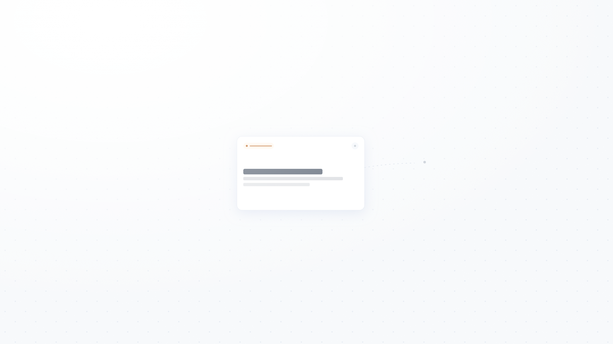
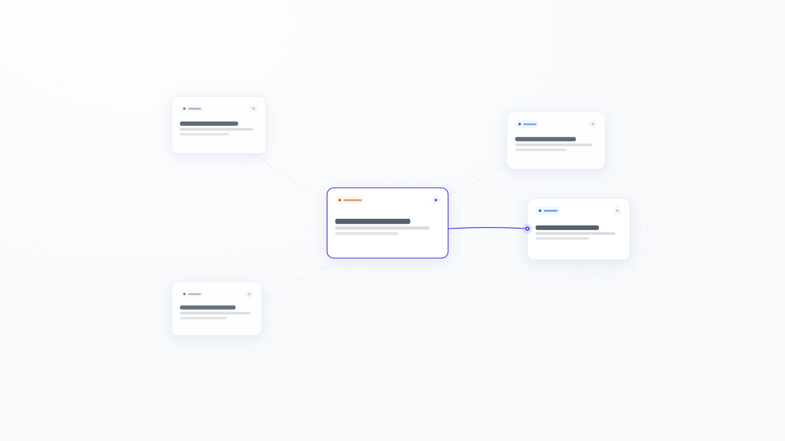
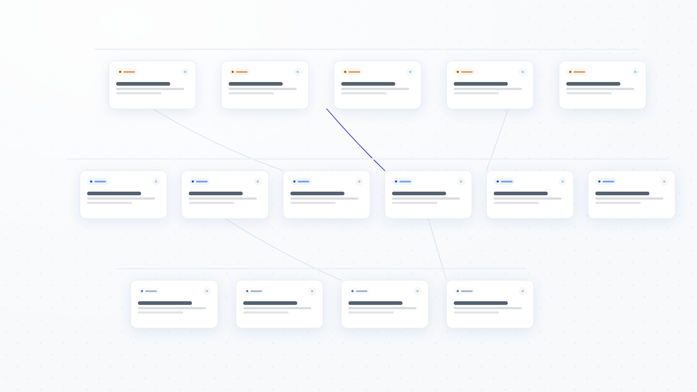
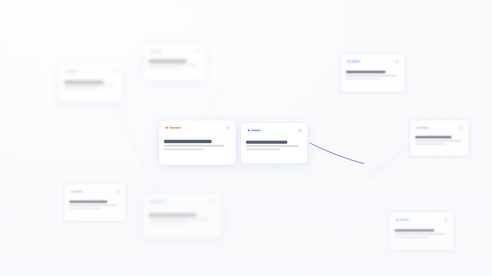
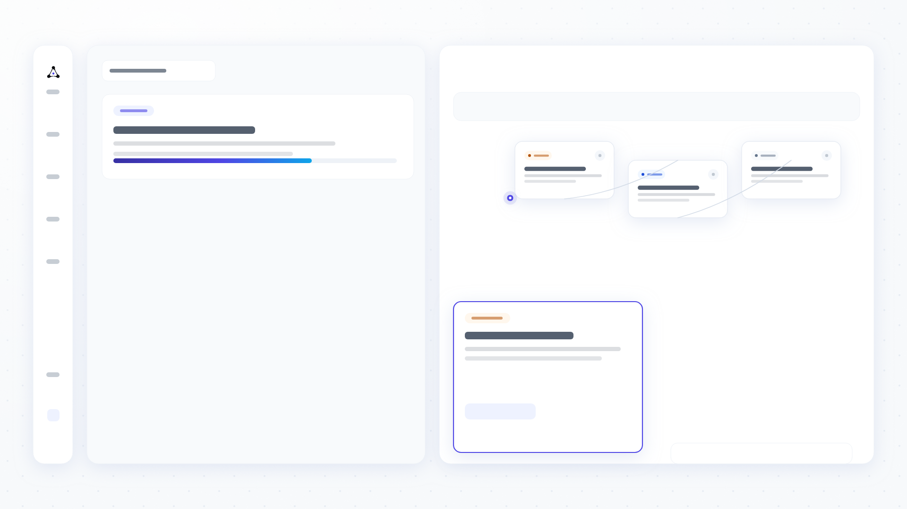
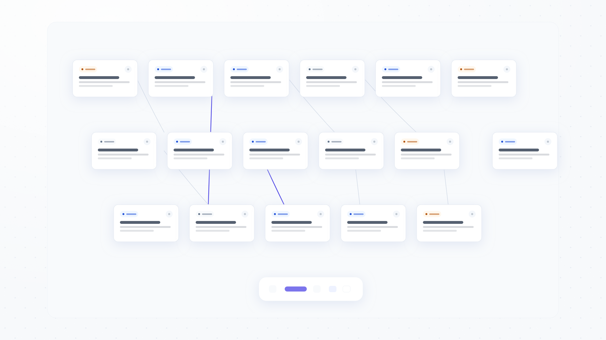
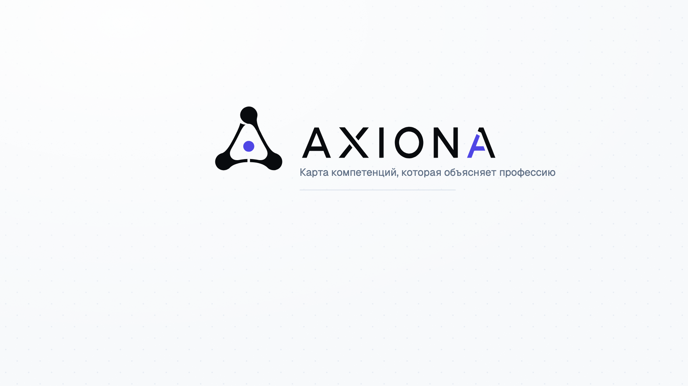

AXIONA · AV storyboard v1 — «Светлая структура»
8 ключевых кадров · 33 s · 16:9 · собрано из токенов globals.css · не AI-рендер, проверка композиции и ритма

S010:00.0–0:03.5
Один узел
Macro · 100 mm · top-down · push-in 8%

S020:03.5–0:07.0
Появляются связи
Wide-top-down · 50 mm · static · rack to edges

S030:07.0–0:12.0
Карта складывается
Wide · 35 mm · crane up + pull-back 12%
S040:12.0–0:16.0
Внутри узла
Macro · 85 mm · eye-level · orbit 15° + tilt up

S050:16.0–0:20.5
Связи
Medium · 50 mm · rack focus · slide 4%

S060:20.5–0:25.0
Выбор
Screen / product UI · static + canvas pan

S070:25.0–0:29.0
Целиком
Full canvas · product UI · pan + pull-back

S080:29.0–0:33.0
Эндкард
Motion design endcard · static · 4 s
Токены:
#F8FAFC bg
#FFFFFF card
#132238 ink
#E2E8F0 line
#4F46E5 accent
#0EA5E9 accent-sky
#B45309 foundation
#1D4ED8 core
#64748B optional
Кадры проверяют только композицию, масштаб, количество объектов и цветовые пропорции.
Серые полосы внутри карточек — плейсхолдеры текста: в AI-кадре их нет, текст накладывается в пост-слое.
Текст, логотип и интерфейс в финале — детерминированный слой (Geist + logo-mark.svg), а не генерация.
Источник: docs/06-communication/COS-COM-011-Audiovisual-Prompt-Kit.md.